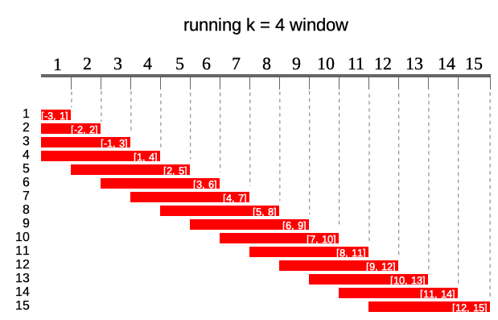
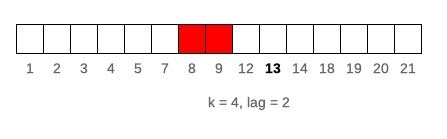
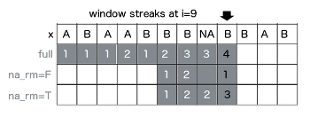
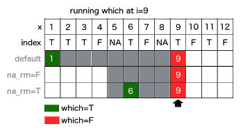

Using runner
Dawid Kałędkowski
2019-10-14
Using_runner.RmdAbout
Package contains standard running functions (aka. windowed, rolling, cumulative) with additional options. runner provides extended functionality like date windows, handling missings and varying window size. runner brings also rolling streak and rollin which, what extends beyond range of functions already implemented in R packages.
Running windows
runner package provides functions applied on running windows. Diagram below illustrates what running windows are - in this case running k = 4 windows. For each of 15 elements of a vector each window contains current 4 elements (exception are first k - 1 elements where window is not complete).

Using runner one can apply any R function f in running window of length defined by k, window lag, observation indexes idx.

Window size
k denotes number of elements in window. If k is a single value then window size is constant for all elements of x. For varying window size one should specify k as integer vector of length(k) == length(x) where each element of k defines window length. If k is empty it means that window will be cumulative (like base::cumsum). Example below illustrates window of k = 4 for 10’th element of vector x. 
Window lag
lag denotes how many observations windows will be lagged by. If lag is a single value than it’s constant for all elements of x. For varying lag size one should specify lag as integer vector of length(lag) == length(x) where each element of lag defines lag of window. Default value of lag = 0. Example below illustrates window of k = 4 lagged by lag = 2 for 10’th element of vector x.

Windows depending on date
Sometimes data points in dataset are not equally spaced (missing weeekends, holidays, other missings) and thus window size should vary to keep expected time frame. If one specifies idx argument, than running functions are applied on windows depending on date. idx should be the same length as x of class Date or integer. Including idx can be combined with varying window size, than k will denote number of periods in window different for each data point. Example below illustrates window of size k = 4 lagged by lag = 2 periods for 10’th element of vector x. This (10th) element has idx = 13 which means that window ranges [8, 11] - although k = 4 only two elements of x are within this window.

Using runner
Own runner
Below example of using base::mean inside of the runner function.
library(runner)
library(magrittr)
x <- runif(15)
k <- sample(1:15, 15, replace = TRUE)
idx <- cumsum(sample(c(1, 2, 3, 4), 15, replace = TRUE))
# simple call
simple_mean <- runner(x = x, k = 4, f = mean)
# additional arguments for mean
trimmed_mean <- runner(x = x, k = 4, f = function(x) mean(x, trim = 0.05))
# varying window size
varying_window <- runner(x = x, k = k, f = function(x) mean(x, trim = 0.05))
# date windows
date_windows <- runner(x = x, k = k, idx = idx, f = function(x) mean(x, trim = 0.05))
data.frame(x, k, idx, simple_mean, trimmed_mean, varying_window, date_windows)## x k idx simple_mean trimmed_mean varying_window date_windows
## 1 0.5300506 10 3 0.5300506 0.5300506 0.5300506 0.5300506
## 2 0.8141978 2 7 0.6721242 0.6721242 0.6721242 0.8141978
## 3 0.3010976 15 10 0.5484487 0.5484487 0.5484487 0.5484487
## 4 0.3634501 6 11 0.5021990 0.5021990 0.5021990 0.4929152
## 5 0.7460266 12 12 0.5561930 0.5561930 0.5509645 0.5509645
## 6 0.2275602 13 14 0.4095336 0.4095336 0.4970638 0.4970638
## 7 0.4518085 15 16 0.4472113 0.4472113 0.4905988 0.4905988
## 8 0.5461319 5 19 0.4928818 0.4928818 0.4669955 0.4989702
## 9 0.4545428 12 22 0.4200108 0.4200108 0.4927629 0.4649200
## 10 0.1825342 12 26 0.4087544 0.4087544 0.4617400 0.4087544
## 11 0.9093449 2 30 0.5231385 0.5231385 0.5459396 0.9093449
## 12 0.4524318 4 34 0.4997134 0.4997134 0.4997134 0.4524318
## 13 0.3047249 7 37 0.4622590 0.4622590 0.4716456 0.3785783
## 14 0.8314485 4 41 0.6244875 0.6244875 0.6244875 0.8314485
## 15 0.5809091 4 43 0.5423786 0.5423786 0.5423786 0.7061788Creating windows
Function creates list of windows. Because runner provide limited functionality, one can create running-window-list which can be further processed by user to obtain desired statistic (eg. window sum). x is a vector to be ‘run on’ and k is a length of window. In this example window length is varying as specified by k. Provide one value to obtain constant window size.
## [[1]]
## [1] 1
##
## [[2]]
## [1] 1 2
##
## [[3]]
## [1] 1 2 3
##
## [[4]]
## [1] 2 3 4
##
## [[5]]
## [1] 4 5Such windows can be used in further calculations, with any R function. Example below shows how to obtain running sum in specified, varying window length (specified by k).
## [1] 1 3 6 9 9One can also specify window based on a date of other numeric index. To do this date should be passed via idx argument and k should be integer denoting date-window span.
## [[1]]
## [1] 1
##
## [[2]]
## [1] 1 2
##
## [[3]]
## [1] 3
##
## [[4]]
## [1] 3 4
##
## [[5]]
## [1] 3 4 5Build-in functions
With runner one can use any R functions, but some of them are optimized for speed reasons. These functions are:
- aggregating functions - length_run, min_run, max_run, minmax_run, sum_run, mean_run, streak_run
- utility functions - fill_run, lag_run, which_run
Other options
-
na_rm = TRUEhandling missing and is equivalent tona.rm.

-
na_pad = TRUEif window size exceeds number of available elements, than firstk-1elements are filled withNA.

-
whichused with running index, which value (‘first’ or ‘last’)

Running aggregations (mean|sum|min|max)_run
Runner provides basic aggregation methods calculated within running windows. Below example showing some functions behavior for different arguments setup. Let’s take a look at 8th element of a vector on which min_run is calculated. First setup uses default values, so algorithm is looking for minimum value in all elements before actual (i=8). By default missing values are removed before calculations by argument na_rm = TRUE, and also window is not specified. The default is equivalent of base::cummin with additional option to ignore NA values. In second example within window k=5, the lowest value is -3. In the last example minimum is not available due to existence of NA. Graphical example is reproduced below in the code.

library(runner)
library(magrittr)
x <- c(1,-5,1,-3,NA,NA,NA,1,-1,NA,-2,3)
k <- c(4,5,2,5,4,4,2,2,4,4,3,1)
idx <- c(1,3,4,6,7,10,13,16,19,21,23,26)
a0 <- cummin(x)
a1 <- min_run(x, na_rm = TRUE)
a2 <- min_run(x, k = 5, na_rm = TRUE)
a3 <- min_run(x, na_rm = FALSE)
a4 <- min_run(x, k = k, na_rm = TRUE, na_pad = TRUE)
a5 <- min_run(x, k = 5, idx = idx)
data.frame(idx, x, a0, a1, a2, a3, a4, a5)## idx x a0 a1 a2 a3 a4 a5
## 1 1 1 1 1 1 1 NA 1
## 2 3 -5 -5 -5 -5 -5 NA -5
## 3 4 1 -5 -5 -5 -5 NA -5
## 4 6 -3 -5 -5 -5 -5 -5 -5
## 5 7 NA NA -5 -5 NA -5 -5
## 6 10 NA NA -5 -5 NA -3 -3
## 7 13 NA NA -5 -3 NA NA NA
## 8 16 1 NA -5 -3 NA 1 1
## 9 19 -1 NA -5 -1 NA -1 -1
## 10 21 NA NA -5 -1 NA -1 -1
## 11 23 -2 NA -5 -2 NA -2 -2
## 12 26 3 NA -5 -2 NA 3 -2fill_run
Function used to replace NA with previous non-NA element. To understand how fill_run works, take a look on illustration. Row ‘x’ represents, and another rows represent replaced NA by fill_run with different options setup (run_for_first=TRUE and only_within=TRUE respectively). By default, fill_run replaces all NA if they were preceded by any value. If NA appeared in the beginning of the vector then it would not be replaced. But if user specify run_for_first=TRUE initial empty values values will be replaced by next non-empty value. Option only_within=TRUE means that NA values would be replaced if they were surrounded by pair of identical values. No windows provided in this functionality.

x <- c(NA, NA, "b", "b", "a", NA, NA, "a", "b", NA, "a", "b")
data.frame(x,
f1 = fill_run(x),
f2 = fill_run(x,run_for_first = TRUE),
f3 = fill_run(x, only_within = TRUE))## x f1 f2 f3
## 1 <NA> <NA> b <NA>
## 2 <NA> <NA> b <NA>
## 3 b b b b
## 4 b b b b
## 5 a a a a
## 6 <NA> a a a
## 7 <NA> a a a
## 8 a a a a
## 9 b b b b
## 10 <NA> b b <NA>
## 11 a a a a
## 12 b b b bRunning streak
To count consecutive elements in specified window one can use streak_run. Following figure illustrates how streak is calculated with three different options setup for 9th element of the input vector x. First shows default configuration, with full window and na_rm = TRUE. Second example count within k = 4 window with count reset on NA. Last example counting streak with continuation after NA. Visualization also supported with corresponding R code.

x <- c("A", "B", "A", "A", "B", "B", "B", NA, "B", "A", "B")
data.frame(
x,
s0 = streak_run(x),
s1 = streak_run(x, na_rm = FALSE, k = 3),
s2 = streak_run(x, k = 4))## x s0 s1 s2
## 1 A 1 1 1
## 2 B 1 1 1
## 3 A 1 1 1
## 4 A 2 2 2
## 5 B 1 1 1
## 6 B 2 2 2
## 7 B 3 3 3
## 8 <NA> 3 NA 3
## 9 B 4 1 3
## 10 A 1 1 1
## 11 B 1 1 1Running which
To obtain index number of element satisfying some condition in window, one can use running which. Functions from this group returns index while condition is TRUE appeared before n-th element of a vector. In below example which_run function returns index of element containing TRUE value. If na_rm=T is specified, missing is treated as FALSE, and is ignored while searching for TRUE. While user set na_rm = F like in second example, function returns NA, because in following window TRUE appears after missing and it’s impossible to be certain which is first (missing is an element of unknown value - could be TRUE or FALSE).

x <- c(T, T, T, F, NA, T, F, NA, T, F, T, F)
data.frame(
x,
s0 = which_run(x, which = "first"),
s1 = which_run(x, na_rm = FALSE, k = 5, which = "first"),
s2 = which_run(x, k = 5, which = "last"))## x s0 s1 s2
## 1 TRUE 1 1 1
## 2 TRUE 1 1 2
## 3 TRUE 1 1 3
## 4 FALSE 1 1 3
## 5 NA 1 1 3
## 6 TRUE 1 2 6
## 7 FALSE 1 3 6
## 8 NA 1 NA 6
## 9 TRUE 1 NA 9
## 10 FALSE 1 6 9
## 11 TRUE 1 NA 11
## 12 FALSE 1 NA 11